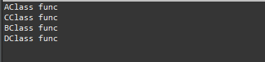
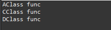

こんにちは。明月です。
この投稿はJavaのインタフェース(interface)に関する説明です。
以前の投稿でクラスとクラスの継承に関して説明したことがあります。
link - [Java] 8. クラスの継承とthis、superキーワードの使い方
一応、継承の概念はクラスのすべての機能を続いてもらってクラスの機能を拡張することです。でもJavaでは複数継承、つまり、連関性がない二つのクラスを継承することができません。
多分、関数のあいまい点せいでできないと思います。 C/C++言語でよく発生した問題でしたが、Javaでは複数継承をできないようにして関数のあいまい点を初めからなくしたと思います。
// 親クラスAClass
class AClass {
// 関数
public void func() {
// コンソール出力
System.out.println("AClass func");
}
}
// 親クラスBClass
class BClass {
// 関数
public void func() {
// コンソール出力
System.out.println("BClass func");
}
}
// クラス、AClassとBClassを継承する。(実際にこんなに作成するとIDEツールからエラーが発生する。)
public class Example extends AClass, BClass {
// 関数
@Override
public void func() {
// 親クラスを呼び出す。
super.func();
}
}
上の例通りにEclipseに作成すればコンパイルエラーが発生します。
Exampleクラスを見ればAClassとBClassを継承してfunc関数を再定義(Override)しました。再定義までよいですが、func関数の中で親クラスのfunc関数を呼び出しますね。この時に親クラスの何処のfunc関数かというあいまい点があります。
C/C++では最後にローディングされた関数を呼び出します。でも、プログラム上でどっちが遅くローディングされるかを分からない問題があります。
この問題を解決するために、Javaからは複数継承をできないようにしたらしいです。
しかし、オブジェクト指向プログラミング(OOP)にきてオブジェクトの一番いい点がデータをクラス化して分類しながらリスト化にできることです。
つまり、AClassから継承したクラスははAClassグループ分類、BClassから継承したクラスははBClassグループに管理することができます。
import java.util.ArrayList;
import java.util.List;
// 親クラスAClass
class AClass {
// 関数
public void func() {
// コンソール出力
System.out.println("AClass func");
}
}
// 親クラスBClass
class BClass {
// 関数
public void func() {
// コンソール出力
System.out.println("BClass func");
}
}
// AClassを継承したクラス
class CClass extends AClass {
// 関数
@Override
public void func() {
// コンソール出力
System.out.println("CClass func");
}
}
// BClassを継承したクラス
class DClass extends BClass {
// 関数
@Override
public void func() {
// コンソール出力
System.out.println("DClass func");
}
}
// 実行クラス
public class Example {
// 実行関数
public static void main(String... args) {
// AClassリスト
List<AClass> aClassList = new ArrayList<>();
// BClassリスト
List<BClass> bClassList = new ArrayList<>();
// AClassリストにAClassのインスタンスを生成して格納する。
aClassList.add(new AClass());
// CClassはAClassクラスを継承したのでAClassタイプに宣言することができる。
aClassList.add(new CClass());
// BClassリストにBClassのインスタンスを生成して格納する。
bClassList.add(new BClass());
// DClassはCClassクラスを継承したのでCClassタイプに宣言することができる。
bClassList.add(new DClass());
// リストのアイテムを取得
for (int i = 0; i < aClassList.size(); i++) {
// アイテム取得
AClass cls = aClassList.get(i);
// コンソール出力
cls.func();
}
// リストのアイテムを取得
for (int i = 0; i < bClassList.size(); i++) {
// アイテム取得
BClass cls = bClassList.get(i);
// コンソール出力
cls.func();
}
}
}

まず、理解することはAClassとCClass間の関係です。CClassはAClassを継承しました。以前、StackとHeapの関係に関して説明したことがあります。
link - [Java] 10. メモリの割り当て(stackメモリとheapメモリ、そしてnew)とCall by reference(ポインタによる参照)
クラスのインスタンスを生成する時に変数タイプとインスタンスタイプは同じことにして実装します。
AClass a = new AClass();
AClass aはStackメモリに格納するし、new ACLassはHeapメモリに割り当てします。
実は変数のデータタイプを宣言する時に合わせる条件があります。
1.インスタンスと同じデータタイプならOK
2.クラスより親クラスやインターフェースならOK
つまり、CClassの場合はAClass c = new CClass();が可能だということです。理由はCClassはAClassの継承したので、AClassの機能とメモリ構造があります。
そのため、AClassで宣言して関数を呼び出しても問題ないです。(参考で、Javaのクラスは原始データタイプ以外はすべてObjectクラスを継承されたので、すべてのデータはObjectタイプで宣言できます。)
なので上の例通りにAClassとBClassをリストで区分することができます。
でも、AClassとDClassは関数構造は同じですが、AClass a = new DClass();はできません。
理由は構造が人が見て同じことで、実はAClassとDClassは連関性が全然ありません。もちろん、AClassとDClassはObjectから継承したので、Objectでは分類することができます。
でも、Objectタイプはfunc関数がないので、Object変数タイプではfunc関数を呼び出すことができません。
しかし、AClassとBClassは差異を置いてAClassとDClassを一つで分類したと思えばインターフェースを使えばできます。
import java.util.ArrayList;
import java.util.List;
// インターフェース
interface IClass {
// func関数定義
public void func();
}
// 親クラスAClass、インターフェースIClassを継承
class AClass implements IClass {
// 関数
public void func() {
// コンソール出力
System.out.println("AClass func");
}
}
// 親クラスBClass
class BClass {
// 関数
public void func() {
// コンソール出力
System.out.println("BClass func");
}
}
// AClassを継承したクラス
class CClass extends AClass {
// 関数
@Override
public void func() {
// コンソール出力
System.out.println("CClass func");
}
}
// インターフェースIClassを継承
// BClassを継承したクラス
class DClass extends BClass implements IClass {
// 関数
@Override
public void func() {
// コンソール出力
System.out.println("DClass func");
}
}
// 実行クラス
public class Example {
public static void main(String... args) {
// IClassクラスリスト
List<IClass> IClassList = new ArrayList<>();
// AClassインスタンスを生成
IClassList.add(new AClass());
// BClassインスタンスを生成
IClassList.add(new CClass());
// DClassインスタンスを生成
IClassList.add(new DClass());
// リストのアイテムを取得
for (int i = 0; i < IClassList.size(); i++) {
// アイテム取得
IClass cls = IClassList.get(i);
// コンソール出力
cls.func();
}
}
}

上の例をみればDClassはAClassとIClassを継承しました。AClassはIClassを継承しました。
つまり、DClassとAClassはIClassを継承してIClassはfunc関数が定義されているので、リストからIClass定義してクラスを分類してインスタンスを格納することができます。
コンソール結果はAClassとBClass、CClass順番で表示します。
ここでインタフェースの特徴はnewでクラスを割り当て(インスタンス生成)をできないです。ただ、Stack領域の変数タイプとしてだけ使えます。
インタフェースはメンバー変数も設定することができないし、関数の場合も関数名まで定義することができます。heap領域、つまり実行コードを実装しません。
実行コードが実行されてないので、インタフェースは複数継承しても問題ないです。関数名だけで定義されているので何を実行するかをextendsで継承した親クラスか割り当ているクラスが実行されます。
インタフェースを継承したときにはimplementsキーワードを使います。一般的にクラス継承はextendsを使います。
また、ここでもう一つ知るものがあります。ListとArrayListクラスとLinkedListの関係です。
link - [Java] 5. 配列とリスト(List)、マップ(Map)の使い方
Listタイプはインスタンスです。ArrayListとLinkedListはクラスです。つまり、Listインタフェースで変数タイプを設定してArrayListのインスタンスを生成しました。
ここまでJavaのインタフェース(interface)に関する説明でした。
ご不明なところや間違いところがあればコメントしてください。
- [Java] 19. ラムダ(Lambda)を使う方法2019/09/03 20:37:14
- [Java] 18. 匿名クラス(Anonymous class)とクロージャ(closure)2019/09/02 20:30:34
- [Java] 17. ジェネリックタイプ(Generic type)を使う方法2019/08/27 19:05:44
- [Java] 16. 例外処理(try~catch~finally, throw)を使う方法2019/08/26 23:40:29
- [Java] 15. 列挙型(バイナリデータビット演算子の使用例)2019/08/23 19:46:10
- [Java] 14. オブジェクト指向プログラミング(OOP)の4つ特性(カプセル化、抽象化、継承、多相化)2019/08/22 20:08:37
- [Java] 13. 抽象クラス(abstract)と継承禁止(final)2019/08/22 00:06:20
- [Java] 12. インタフェース(interface)2019/08/20 23:46:23
- [Java] 11. StringのhashCodeとequals、そしてtoStringの再定義(override)2019/08/20 00:42:04
- [Java] 10. メモリの割り当て(stackメモリとheapメモリ、そしてnew)とCall by reference(ポインタによる参照)2019/08/07 20:53:34
- [Java] 9. アクセス修飾子とstatic2019/08/06 20:22:48
- [Java] 8. クラスの継承とthis、superキーワードの使い方2019/08/05 23:22:58
- [Java] 7. クラスを作成する方法(コンストラクタを作成方法)2019/08/02 22:45:42
- [Java] 6. 関数の使い方(関数のオーバーロードと再帰的な方法について)2019/08/01 20:40:40
- [Java] 5. 配列とリスト(List)、マップ(Map)の使い方2019/07/26 23:25:58
- [Design pattern] 2-4. デコレーターパターン(Decorator pattern)2021/10/28 20:11:13
- [C#] 58. ウィンドウフォーム(Window form)を作成する方法、そしてウィンドウメッセージとキュー2021/10/27 20:35:44
- [Design pattern] 2-3. ブリッジパターン(Bridge pattern)2021/10/27 20:32:21
- [Design pattern] 2-2. コンポジットパターン(Composite pattern)2021/10/27 20:30:54
- [Design pattern] 2-1. アダプターパターン(Adapter pattern)2021/10/26 19:12:40
- [Project design] プログラム最終テスト - ST(System test(Standard, Scenario))2021/10/26 19:10:07
- [Project design] プログラム結合テスト - IT(Integration test)2021/10/25 20:12:17
- [Python] Seleniumライブラリを使う方法(自動ウェブテスト、ウェブスクレイピング)2021/10/25 19:29:00
- [Design pattern] 1-5. プロトタイプパターン(Prototype pattern)2021/10/22 19:35:45
- [Project design] プログラム検証とテスト - Unitテスト2021/10/22 19:34:09
- [C#] 57. コーティング規約2021/10/21 18:57:02
- [C#] 56. 値の初期化及び基本データ値(default)を設定する方法、そして原始データのnull処理、?と??の使い方2021/10/21 18:54:41
- [C#] 55.namespaceとusing、そしてpartialの使い方2021/10/21 18:51:39
- [C#] 54. Reflection機能を使い方 - Attribute2021/10/20 19:29:31
- [Project design] プログラム制作(コーディング) - クラス作成方法2021/10/20 19:28:09